Formula 1 Seasons
Below is a list of all of the Formula 1 seasons in the decade; click on a year to see the cars and drivers featured on stamps for that specific Formula 1 season. Also listed are any specific events for the season featured on stamps in my collection and/or any stamps that feature the season in question. Click on an event or a championship winning driver name to see the stamps featuring that particular event or driver.
Below is a list of all of the Formula 1 seasons in the decade; click on a year to see the cars and drivers featured on stamps for that specific Formula 1 season. Also listed are any specific events for the season featured on stamps in my collection and/or any stamps that feature the season in question. Click on an event or a championship winning driver name to see the stamps featuring that particular event or driver.
1960
Lotus, Ferrari and BRM all introduced rear-engine cars; this was the last year that the 2.5 litre formula was used. Front-engine cars like the Aston Martins and the Scarabs were outclassed. Stirling Moss' Rob Walker Lotus gave Colin Chapman his first grand prix win at Monaco. But, Cooper took the most race wins. The Italian Grand Prix was boycotted by the British constructors as the Italians were using Monza's banked circuit. The points-scoring system was changed with the point for fastest lap being dropped and a point now being given for sixth place. The best six scores counted towards the championship, increased from five from the previous season. This was the last season to include the Indianapolis 500 Race, and the last season which saw a race win for a front-engine car.
Lotus, Ferrari and BRM all introduced rear-engine cars; this was the last year that the 2.5 litre formula was used. Front-engine cars like the Aston Martins and the Scarabs were outclassed. Stirling Moss' Rob Walker Lotus gave Colin Chapman his first grand prix win at Monaco. But, Cooper took the most race wins. The Italian Grand Prix was boycotted by the British constructors as the Italians were using Monza's banked circuit. The points-scoring system was changed with the point for fastest lap being dropped and a point now being given for sixth place. The best six scores counted towards the championship, increased from five from the previous season. This was the last season to include the Indianapolis 500 Race, and the last season which saw a race win for a front-engine car.
Constructor Title: Cooper |
Driver Title: Jack Brabham 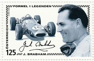 |
Charity Souvenir Cover featuring the 1960 F1 Season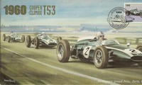 |
1961
The 1.5 litre formula was introduced. The season was dominated by Ferrari, only beaten by Stirling Moss in an outdated Lotus (on tracks where Moss' skills offset the Ferrari power advantage). The contest for the championship was between Ferrari's leading drivers, Phil Hill and Wolfgang von Trips; the season ended in tragedy when von Trips collided with Jim Clark at Monza, killing the Ferrari driver and 14 spectators. Hill went on to win the championship, the first American to do so. The number of points awarded to the winning driver was increased to nine.
The 1.5 litre formula was introduced. The season was dominated by Ferrari, only beaten by Stirling Moss in an outdated Lotus (on tracks where Moss' skills offset the Ferrari power advantage). The contest for the championship was between Ferrari's leading drivers, Phil Hill and Wolfgang von Trips; the season ended in tragedy when von Trips collided with Jim Clark at Monza, killing the Ferrari driver and 14 spectators. Hill went on to win the championship, the first American to do so. The number of points awarded to the winning driver was increased to nine.
Constructor Title: Ferrari |

Ferrari Formula 1 World Champions 1961 - Phil Hill  |
Charity Souvenir Cover featuring the 1961 F1 Season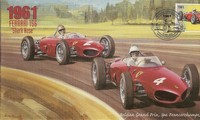 |
A mini sheet featuring the Ferguson P99 Climax  |
1962
The British teams made significant progress, leaving Ferrari behind. BRM came good with Graham Hill taking the championship after a season long battle with the revolutionary monocoque Lotus 25 driven by Jim Clark. Dan Gurney gave Porsche their only grand prix win, and Cooper won their last race until 1966. Lola made their first of their sporadic forays into grand prix racing, and Jack Brabham emerged as a constructor, scoring his first points in his own car. Stirling Moss had a serious crash before the championship season began and never raced in a grand prix again.
The British teams made significant progress, leaving Ferrari behind. BRM came good with Graham Hill taking the championship after a season long battle with the revolutionary monocoque Lotus 25 driven by Jim Clark. Dan Gurney gave Porsche their only grand prix win, and Cooper won their last race until 1966. Lola made their first of their sporadic forays into grand prix racing, and Jack Brabham emerged as a constructor, scoring his first points in his own car. Stirling Moss had a serious crash before the championship season began and never raced in a grand prix again.
Constructor Title: BRM |
Driver Title: Graham Hill 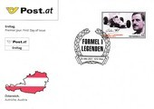 |
1962 - 20th Monaco Grand Prix |
Charity Souvenir Cover featuring the 1962 F1 Season  |
1963
British teams and drivers continued to dominate; Ferrari were left with fourth place in the International Cup for F1 Manufacturers behind three British teams (Lotus-Climax, BRM, and Brabham-Climax). Jim Clark won seven races, Graham Hill and John Surtees shared the other three race wins. Some ex-Ferrari workers founded ATS (Automobil Turismo e Sport), but this was a complete failure - the team only competed in five races in this season. Phil Hill drove for ATS and this venture effectively ruined his Grand Prix career.
British teams and drivers continued to dominate; Ferrari were left with fourth place in the International Cup for F1 Manufacturers behind three British teams (Lotus-Climax, BRM, and Brabham-Climax). Jim Clark won seven races, Graham Hill and John Surtees shared the other three race wins. Some ex-Ferrari workers founded ATS (Automobil Turismo e Sport), but this was a complete failure - the team only competed in five races in this season. Phil Hill drove for ATS and this venture effectively ruined his Grand Prix career.
Constructor Title: Lotus |
Driver Title: Jim Clark |
1963 - Monaco Grand Prix of Europe |
Charity Souvenir Cover featuring the 1963 F1 Season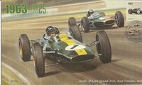 |
1964
The battle for the championship was again a close contest between three British drivers - Jim Clark, John Surtees and Graham Hill. The title was decided at the Mexican Grand Prix, Hill was delayed after a collision with Lorenzo Bandini's Ferrari and Clark was forced to stop with an oil leak on the last lap. Ferrari issued team orders to Bandini to let Surtees through into the second place which gave him the championship by one point from Hill. Honda made a low-key debut in grand prix racing.
The battle for the championship was again a close contest between three British drivers - Jim Clark, John Surtees and Graham Hill. The title was decided at the Mexican Grand Prix, Hill was delayed after a collision with Lorenzo Bandini's Ferrari and Clark was forced to stop with an oil leak on the last lap. Ferrari issued team orders to Bandini to let Surtees through into the second place which gave him the championship by one point from Hill. Honda made a low-key debut in grand prix racing.
Constructor Title: Ferrari |
Driver Title: John Surtees |
Ferrari Formula 1 World Champions 1964 - John Surtees |
Charity Souvenir Cover featuring the 1964 F1 Season  |
1965
The dominant British teams and drivers continued their reign over the championship, winning all races except for the final round which went to Honda and the American driver, Richie Ginther (Honda's first win). Jim Clark's second championship included six wins interrupted only by non-starting at Monaco whilst he was away winning the Indianapolis 500. Jackie Stewart finished third in the championship in his debut season. The final season in which the 1.5 litre formula was used.
The dominant British teams and drivers continued their reign over the championship, winning all races except for the final round which went to Honda and the American driver, Richie Ginther (Honda's first win). Jim Clark's second championship included six wins interrupted only by non-starting at Monaco whilst he was away winning the Indianapolis 500. Jackie Stewart finished third in the championship in his debut season. The final season in which the 1.5 litre formula was used.
Constructor Title: Lotus |
Driver Title: Jim Clark |
Charity Souvenir Cover featuring the 1965 F1 Season  |
A sheet of local post labels featuring Jim Clark (World Champion)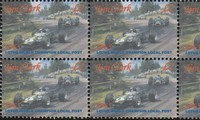 |
A sheet of local post labels featuring Jim Clark (World Champion)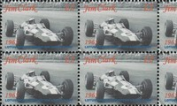 |
A sheet of local post labels featuring Jim Clark (World Champion)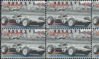 |
1966
Engine capacity was doubled as the new 3 litre formula was introduced; Climax withdrew from Grand Prix racing so the British manufacturers had to look elsewhere for their engines. Jack Brabham won his third championship, driving a car that he had built himself. Bruce McLaren and Dan Gurney also manufactured their own cars, although with little initial success. The regulations were changed, such that cars completing less than 90% of the race distance were not classified and did not receive points, even if they finished in the top six.
Engine capacity was doubled as the new 3 litre formula was introduced; Climax withdrew from Grand Prix racing so the British manufacturers had to look elsewhere for their engines. Jack Brabham won his third championship, driving a car that he had built himself. Bruce McLaren and Dan Gurney also manufactured their own cars, although with little initial success. The regulations were changed, such that cars completing less than 90% of the race distance were not classified and did not receive points, even if they finished in the top six.
Constructor Title: Brabham |

Charity Souvenir Cover featuring the 1966 F1 Season  |
1967
A new engine was unveiled by Lotus - the new Ford-sponsored Cosworth DFV engine was to become one of the outstanding racing engines of all time. The Ford-Cosworth DFV would go on to win 155 Grand Prix, as well as at Le Mans and Indianapolis. Although Jim Clark lost out on the title, he confirmed his status as one of the all time greats - at Monza, Clark pitted to replace a tyre, made up a lap to retake the lead, only to run out of fuel on the last lap. Dan Gurney's Eagle won its only victory, and Pedro Rodriguez gave Cooper their last win.
A new engine was unveiled by Lotus - the new Ford-sponsored Cosworth DFV engine was to become one of the outstanding racing engines of all time. The Ford-Cosworth DFV would go on to win 155 Grand Prix, as well as at Le Mans and Indianapolis. Although Jim Clark lost out on the title, he confirmed his status as one of the all time greats - at Monza, Clark pitted to replace a tyre, made up a lap to retake the lead, only to run out of fuel on the last lap. Dan Gurney's Eagle won its only victory, and Pedro Rodriguez gave Cooper their last win.
Constructor Title: Brabham |

Charity Souvenir Cover featuring the 1967 F1 Season  |
1968
The car related firms like BP, Shell and Firestone withdrew their support, so the FIA permitted the use of unrestricted sponsorship. Lotus lost the exclusive right to the DFV engine and Ken Tyrrell's team appeared on the scene. Stewart's winning drive in a Tyrrell during the rain and fog of the 1968 German Grand Prix at the Nurburgring, where he won by a margin of four minutes, is considered as one of the finest ever, even though his rain tires were probably better than those of the competition. 1968 was a turning point in terms of technology and safety. Wings were used for the first time and aerodynamics played an important part in terms of the cars' performance. Five Grand Prix drivers were killed, one of whom was Jim Clark, one of the most successful and popular drivers of all time. It was the last year where all the races were run on tracks with almost no safety modifications.
The car related firms like BP, Shell and Firestone withdrew their support, so the FIA permitted the use of unrestricted sponsorship. Lotus lost the exclusive right to the DFV engine and Ken Tyrrell's team appeared on the scene. Stewart's winning drive in a Tyrrell during the rain and fog of the 1968 German Grand Prix at the Nurburgring, where he won by a margin of four minutes, is considered as one of the finest ever, even though his rain tires were probably better than those of the competition. 1968 was a turning point in terms of technology and safety. Wings were used for the first time and aerodynamics played an important part in terms of the cars' performance. Five Grand Prix drivers were killed, one of whom was Jim Clark, one of the most successful and popular drivers of all time. It was the last year where all the races were run on tracks with almost no safety modifications.
Constructor Title: Lotus |
Driver Title: Graham Hill 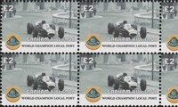 |
Charity Souvenir Cover featuring the 1968 F1 Season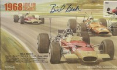 |
A sheet of local post labels featuring Graham Hill (World Champion) |
A sheet of local post labels featuring Graham Hill (World Champion)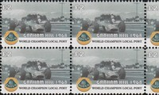 |
A sheet of local post labels featuring Graham Hill (World Champion)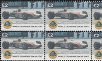 |
1968 Barcelona Grand Prix (Formula 2) |
1969
The use of wings was banned, following various incidents involving the wings, struts, or the suspension (to which they were attached) collapsed, wings were banned. They were reintroduced later in the season but were to be restricted in size and height, and attached directly to the chassis in a fixed position. There was more interest in the use of four wheel drive, following a number of wet races in the previous season. However, wide tyres and downforce was proven to be the better means of improving grip and so 4WD was largely abandoned. The Belgian Grand Prix at Spa-Francorchamps was boycotted by many of the drivers because of the extreme danger of the track after an overall inspection of Spa by Jackie Stewart. The race was eventually dropped from the calendar, and it was included in 1970 after Armco was added to the track.
The use of wings was banned, following various incidents involving the wings, struts, or the suspension (to which they were attached) collapsed, wings were banned. They were reintroduced later in the season but were to be restricted in size and height, and attached directly to the chassis in a fixed position. There was more interest in the use of four wheel drive, following a number of wet races in the previous season. However, wide tyres and downforce was proven to be the better means of improving grip and so 4WD was largely abandoned. The Belgian Grand Prix at Spa-Francorchamps was boycotted by many of the drivers because of the extreme danger of the track after an overall inspection of Spa by Jackie Stewart. The race was eventually dropped from the calendar, and it was included in 1970 after Armco was added to the track.
Constructor Title: Matra |
Driver Title: Jackie Stewart |
Formula 1 Motor Racing 1969 |
Charity Souvenir Cover featuring the 1969 F1 Season  |
1969 Spanish Grand Prix |